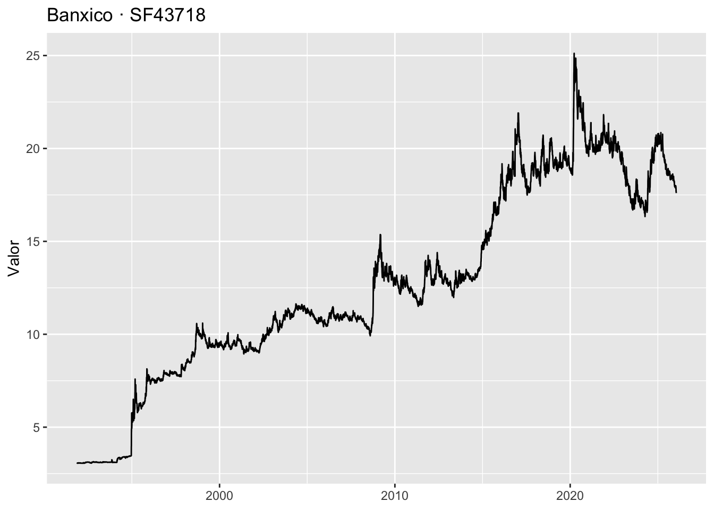

token_inegi <- "AQUI_VA_TU_TOKEN_INEGI"
token_bmx <- "AQUI_VA_TU_TOKEN_BANXICO"Práctica 3: INEGI y Banxico
Este material introduce cómo consultar datos en línea desde R usando dos fuentes clave para México:
- INEGI (API de Indicadores: Banco de Indicadores / BIE y BISE)
- Banco de México (Banxico) (SIE-API: series de tiempo)
El objetivo es que puedas (1) conectarte, (2) traer una serie, (3) dejarla lista para análisis y (4) graficarla.
Intro
En ciencias sociales, una API sirve para automatizar el acceso a indicadores y series sin “bajar archivos a mano” cada vez. En este módulo aprenderás a:
- Guardar tus tokens de forma segura
- Descargar una serie del INEGI con
{inegiR}
- Descargar una serie del Banxico con
{siebanxicor}
- Hacer una gráfica rápida (estática e interactiva)
Fuentes oficiales: - INEGI, API de Indicadores (v2.0).
- Banxico, SIE-API (incluye token y ejemplos).
Tokens (seguridad básica)
Un token es una “llave” que identifica tus solicitudes. Es personal (va ligado a tu correo o a tu cuenta) y puede bloquearse si se usa de forma indebida o si se exceden límites.
Recomendación (mejor práctica)
En vez de escribir el token en el script, guárdalo como variable de entorno y léelo desde R.
Opción A (simple): objeto en el script (solo para práctica local)
Opción B (recomendada): .Renviron (persistente y más seguro)
Abre tu archivo .Renviron:
☐ Edit '/Users/anaescoto/.Renviron'.☐ Restart R for changes to take effect.- Agrega (una por línea) y guarda:
INEGI_TOKEN=xxxxxxxxxxxxxxxxxxxxxxxx
BANXICO_TOKEN=yyyyyyyyyyyyyyyyyyyyyy- Reinicia R y lee los tokens:
token_inegi <- Sys.getenv("INEGI_TOKEN")
token_bmx <- Sys.getenv("BANXICO_TOKEN")
nchar(token_inegi); nchar(token_bmx)[1] 36[1] 64Importante: no subas tokens a GitHub ni los compartas por correo.
Paquetes
Usaremos tidyverse para limpiar/graficar y dos paquetes especializados:
{inegiR}para la API de Indicadores del INEGI
{siebanxicor}para el SIE-API de Banxico
Además, httr y jsonlite son útiles cuando quieres hacer consultas “a mano” (sin paquete) y entender qué está pasando.
pacman::p_load(
tidyverse,
inegiR,
siebanxicor,
httr, jsonlite,
lubridate,
plotly
)INEGI con {inegiR} (serie rápida)
¿Qué indicadores funcionan aquí?
inegiR está pensado para la API de Indicadores del INEGI, que permite consultar datos y metadatos de indicadores nacionales, estatales y municipales. Puedes explorar la documentación oficial y el “constructor de consultas” aquí:
- INEGI API de Indicadores: https://www.inegi.org.mx/servicios/api_indicadores.html
Descarga de una serie (ejemplo mínimo)
En esta práctica usaremos un ejemplo típico: una serie de precios (por ejemplo, el IPC). Lo importante aquí es la mecánica; después cambiarás el ID por el de tu interés.
ipc <- inegiR::inegi_series(
serie = 910392, # ejemplo de ID
token = token_inegi,
database = "BIE-BISE" # ojo distinto a documentación
)
glimpse(ipc)Rows: 684
Columns: 4
$ date <date> 2025-12-01, 2025-11-01, 2025-10-01, 2025-09-01, 2025-08…
$ date_shortcut <chr> "M12", "M11", "M10", "M9", "M8", "M7", "M6", "M5", "M4",…
$ values <dbl> 143.042, 142.645, 141.708, 141.197, 140.867, 140.780, 14…
$ notes <chr> "", "", "", "", "", "", "", "", "", "", "", "", "", "", …head(ipc, 5) date date_shortcut values notes
1 2025-12-01 M12 143.042
2 2025-11-01 M11 142.645
3 2025-10-01 M10 141.708
4 2025-09-01 M9 141.197
5 2025-08-01 M8 140.867 Limpieza mínima para graficar
ipc2 <- ipc %>%
mutate(
date = as.Date(date),
values = as.numeric(values)
) %>%
arrange(date)
ipc2 %>% tail(5) date date_shortcut values notes
680 2025-08-01 M8 140.867
681 2025-09-01 M9 141.197
682 2025-10-01 M10 141.708
683 2025-11-01 M11 142.645
684 2025-12-01 M12 143.042 INEGI “a mano” (para entender endpoints)
A veces conviene entender la estructura general: dominio + endpoint + parámetros + token. La API de INEGI ofrece formatos distintos (JSON-Stat, etc.). En el curso usaremos paquetes la mayor parte del tiempo, pero esta sección sirve para “ver detrás del telón”.
Sugerencia didáctica: abre el constructor de consultas del INEGI, arma una consulta, copia la URL y prueba en R con
httr::GET().
# Ejemplo ilustrativo: sustituye con una URL real del constructor
url_ejemplo <- paste0("https://www.inegi.org.mx/app/api/indicadores/desarrolladores/jsonxml/INDICATOR/910392/es/00/true/BIE-BISE/2.0/", token_inegi,"?type=json")
resp <- httr::GET(url_ejemplo)
httr::status_code(resp)[1] 200txt <- httr::content(resp, as = "text", encoding = "UTF-8")
jsonlite::fromJSON(txt) |> names()[1] "Header" "Series"Banxico con {siebanxicor}
Token de Banxico y límites
Para usar el SIE-API, Banxico exige un token que se envía en cada solicitud (por header o parámetro). Documentación oficial:
- Token Banxico: https://www.banxico.org.mx/SieAPIRest/service/v1/token
- Ejemplos oficiales (incluye R): https://www.banxico.org.mx/SieAPIRest/service/v1/doc/ejemplos
- Portal general SIE-API: https://www.banxico.org.mx/SieAPIRest/
Nota importante de compatibilidad: Banxico ha indicado requisitos de seguridad (por ejemplo TLS 1.3) en su portal del API. Revisa tu sistema si encuentras errores de conexión.
Configurar token en el paquete
# Guardar token en la sesión (recomendado; no lo imprimas en pantalla)
siebanxicor::setToken(token_bmx)Buscar y descargar una serie
El flujo típico es:
- Identificar el código de serie (por catálogo o por el buscador del SIE)
- Descargar la serie con el paquete
En el sitio del SIE puedes buscar por nombre/tema y copiar el ID de la serie.
Aquí va un ejemplo (sustituye SF43718 por una serie que elijas):
serie_id <- "SF43718" # EJEMPLO: cambia por una serie real de tu interés
bmx <- siebanxicor::getSeriesData(serie_id) %>% as.data.frame()
glimpse(bmx)Rows: 8,593
Columns: 2
$ SF43718.date <date> 1991-11-12, 1991-11-13, 1991-11-14, 1991-11-15, 1991-11…
$ SF43718.value <dbl> 3.0735, 3.0712, 3.0718, 3.0684, 3.0673, 3.0661, 3.0632, …head(bmx, 5) SF43718.date SF43718.value
1 1991-11-12 3.0735
2 1991-11-13 3.0712
3 1991-11-14 3.0718
4 1991-11-15 3.0684
5 1991-11-18 3.0673Preparar para graficar
bmx2 <- bmx %>%
mutate(
date = as.Date(SF43718.date),
value = as.numeric(SF43718.value)
) %>%
arrange(date)
ggplot(bmx2, aes(x = date, y = value)) +
geom_line() +
labs(
title = paste("Banxico ·", serie_id),
x = NULL, y = "Valor"
)
Bibliografía y documentación
- INEGI. API de Indicadores (v2.0). https://www.inegi.org.mx/servicios/api_indicadores.html
- Banxico. SIE-API (portal). https://www.banxico.org.mx/SieAPIRest/
- Banxico. Token de consulta. https://www.banxico.org.mx/SieAPIRest/service/v1/token
- Banxico. Ejemplos del API. https://www.banxico.org.mx/SieAPIRest/service/v1/doc/ejemplos
- CRAN. inegiR: Integrate INEGI’s API with R. https://cran.r-project.org/package=inegiR
- CRAN. siebanxicor: Query Data Series from Bank of Mexico. https://cran.r-project.org/package=siebanxicor